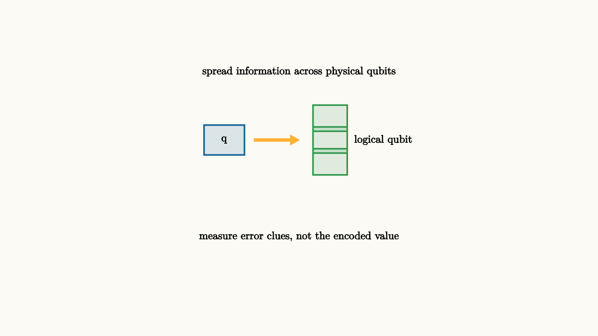

Real qubits are noisy. They relax, dephase, drift, and respond imperfectly to gates. A useful quantum computer cannot rely on each physical qubit staying perfect. It needs error correction.
Classical repetition gives the first idea. To protect a bit, store three copies:
If one bit flips, majority vote recovers the original. Quantum error correction has to be more careful because measuring a qubit directly would reveal and disturb the information we are trying to protect.

source
background = [0.985, 0.98, 0.955, 1]
camera = Camera(4.8b)
mesh repeat = block {
. fill{alpha{0.14} BLUE} stroke{BLUE, 2} center{[-1.2, 0.45, 0]} Rect([0.65, 0.48])
. center{[-1.2, 0.45, 0]} Text("q", 0.62)
. color{ORANGE} Arrow(start: [-0.72, 0.45, 0], end: [0.0, 0.45, 0])
. fill{alpha{0.14} GREEN} stroke{GREEN, 2} center{[0.5, 0.8, 0]} Rect([0.55, 0.42])
. fill{alpha{0.14} GREEN} stroke{GREEN, 2} center{[0.5, 0.45, 0]} Rect([0.55, 0.42])
. fill{alpha{0.14} GREEN} stroke{GREEN, 2} center{[0.5, 0.1, 0]} Rect([0.55, 0.42])
. center{[1.35, 0.45, 0]} Text("logical qubit", 0.62)
. center{[0, 1.55, 0]} Text("spread information across physical qubits", 0.62)
. center{[0, -1.1, 0]} Text("measure error clues, not the encoded value", 0.62)
}
"encoded information"
play Fade(0.7)The trick is to measure syndromes. A syndrome is information about what error happened, without revealing the logical state itself. For example, parity checks can tell whether neighboring physical qubits disagree. If the pattern of disagreements points to one flipped qubit, the correction can be applied.
For a three-bit repetition code, the checks might ask whether the first two bits agree and whether the last two bits agree. The answers do not reveal whether the protected bit was $0$ or $1$. They reveal where a flip probably happened. Quantum codes use the same philosophy with measurements designed to commute with the encoded information.
Errors have directions
Quantum errors include bit flips, phase flips, and combinations of the two. The Pauli matrices $X$, $Z$, and $Y$ form a basic error language. A bit flip changes $|0\rangle$ to $|1\rangle$. A phase flip changes $|+\rangle$ to $|-\rangle$. Good codes detect both kinds.
This is possible because quantum errors can be discretized by syndrome measurement. Even if a physical error is a small continuous rotation, the code's checks project it into a finite set of correctable error patterns.
That sentence sounds surprising, so slow it down. Suppose a qubit suffers a tiny unwanted rotation. Relative to the code, that rotation can be decomposed into a combination of no error, $X$ error, $Y$ error, and $Z$ error. Syndrome measurement separates the correctable components without reading the logical state. After the syndrome is known, the controller applies a correction or updates its software record of the frame.
Modern quantum error correction is often described with stabilizers. A stabilizer is an operator whose measurement should return a predictable value for every valid code state. When an error anticommutes with one of these checks, the sign flips. The pattern of flipped signs is the syndrome.
source
param error = 0.0
background = [0.985, 0.98, 0.955, 1]
camera = Camera(4.8b)
let Code = |error| block {
. fill{alpha{0.14} BLUE} stroke{BLUE, 3} center{[-1.0, 0.45, 0]} Circle(0.25)
. fill{alpha{0.14} BLUE} stroke{BLUE, 3} center{[0, 0.45 - 0.55 * error, 0]} Circle(0.25)
. fill{alpha{0.14} BLUE} stroke{BLUE, 3} center{[1.0, 0.45, 0]} Circle(0.25)
. stroke{ORANGE, 3} Line(start: [-1.0, -0.2, 0], end: [0, -0.2, 0])
. stroke{ORANGE, 3} Line(start: [0, -0.2, 0], end: [1.0, -0.2, 0])
. center{[-0.5, -0.55, 0]} Text("check", 0.62)
. center{[0.5, -0.55, 0]} Text("check", 0.62)
. center{[0, 1.45, 0]} Text("syndrome checks locate the disturbance", 0.62)
}
"clean code block"
mesh code = Code(error: $error)
play Fade(0.6)
"one qubit drifts"
error = 1.0
code = Code(error: $error)
play Lerp(1.2)
"surface code idea"
code = block {
. center{[0, 1.45, 0]} Text("larger codes use many local checks", 0.62)
. fill{alpha{0.12} BLUE} stroke{BLUE, 2} center{[-0.9, 0.45, 0]} Circle(0.18)
. fill{alpha{0.12} BLUE} stroke{BLUE, 2} center{[0, 0.45, 0]} Circle(0.18)
. fill{alpha{0.12} BLUE} stroke{BLUE, 2} center{[0.9, 0.45, 0]} Circle(0.18)
. fill{alpha{0.12} BLUE} stroke{BLUE, 2} center{[-0.9, -0.25, 0]} Circle(0.18)
. fill{alpha{0.12} BLUE} stroke{BLUE, 2} center{[0, -0.25, 0]} Circle(0.18)
. fill{alpha{0.12} BLUE} stroke{BLUE, 2} center{[0.9, -0.25, 0]} Circle(0.18)
. fill{alpha{0.18} ORANGE} stroke{ORANGE, 2} center{[-0.45, 0.1, 0]} Rect([0.42, 0.32])
. fill{alpha{0.18} ORANGE} stroke{ORANGE, 2} center{[0.45, 0.1, 0]} Rect([0.42, 0.32])
. center{[0, -1.15, 0]} Text("the logical qubit lives in the pattern, not one dot", 0.62)
}
play Trans(1.0)Surface codes, color codes, and other modern codes use many physical qubits arranged so local checks reveal local error patterns. The logical qubit is stored globally across the pattern. This makes the information more resilient than any single component.
The price is overhead. One logical qubit can require many physical qubits, especially when the hardware error rate is close to the code threshold. The threshold theorem gives the hopeful direction: if physical errors are below a certain rate and the noise is well behaved, increasing the code size can suppress logical errors exponentially. Long algorithms then become an engineering question rather than a direct fight against every microscopic disturbance.
This changes how to read claims about quantum computers. A device with many physical qubits may have far fewer logical qubits after error correction. A device with excellent physical qubits may need less overhead. The useful measure is the protected logical operation: can the machine keep encoded information alive, apply gates to it, and extract syndromes quickly enough to stay ahead of noise?
The lesson to keep
Quantum error correction protects information by spreading it across a larger system and measuring only error clues. It is the bridge from beautiful quantum algorithms to practical quantum computers. Without it, decoherence wins too quickly. With it, long computations become possible if physical errors are below the code's threshold and enough overhead is available.